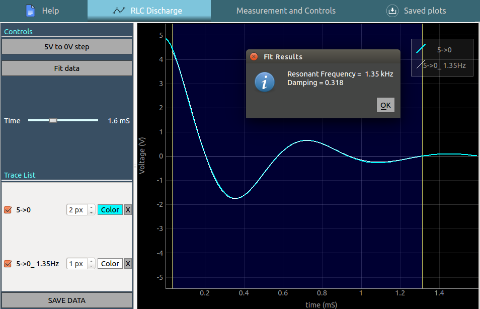
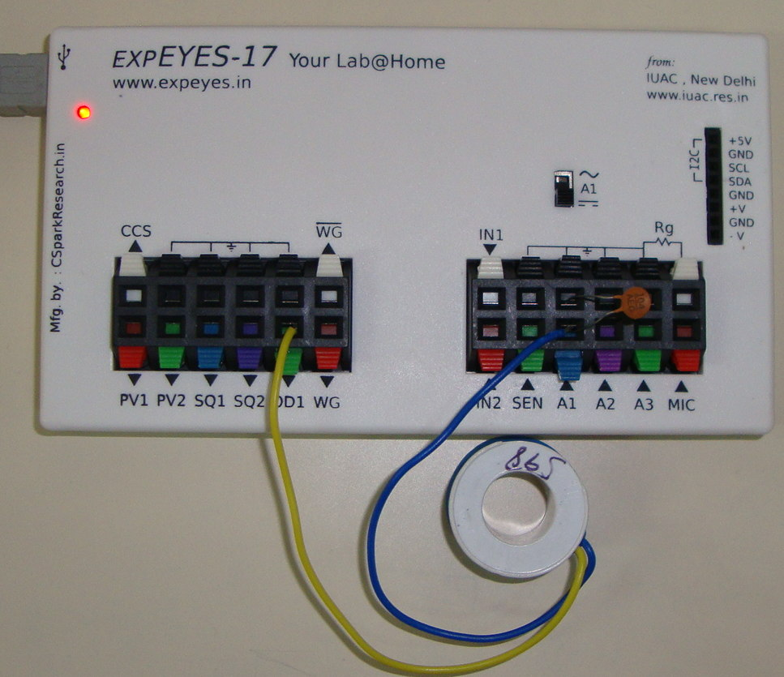

Schematic

Screenshot

Photograph
Animation : Click to play
Introduction
-
A voltage step from 5V to 0V is applied to a series LCR circuit, and the voltage across the capacitor is recorded.
-
The inductor used is a coil with around 125 mH of inductance, and 550 Ohms of coil resistance.
-
If the response shows that it is under-damped, series resistance may be added to increase damping.
Analysis
- Drag the blue region to select a portion of the graph, and click on the ‘Fit data’ button to fit it with a damped sine function